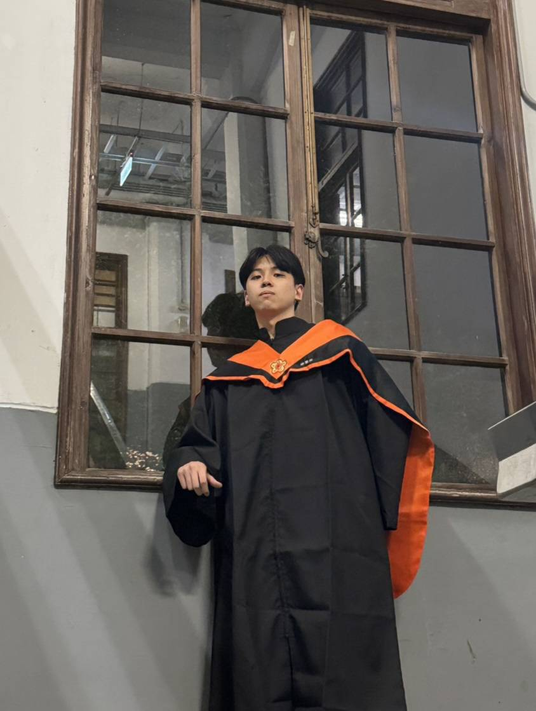
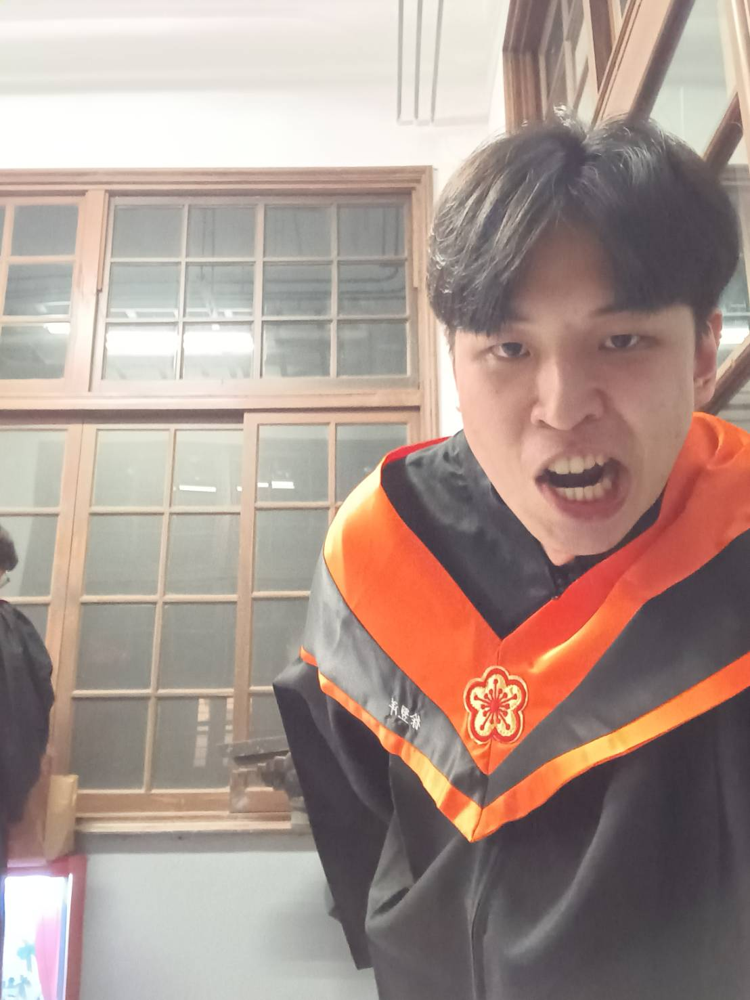

Featured Journal Paper
吳彥霆｜應用於 X 與 Ku 頻段電磁干擾屏蔽之寬頻高校金屬修飾石墨烯超穎表面吸收體
Broadband and High-Efficiency Metal-Decorated Graphene Metasurface Absorber for X- and Ku-Band EMI Shielding
Members
研究室成員與歷屆碩士畢業生。
Featured Journal Paper
Broadband and High-Efficiency Metal-Decorated Graphene Metasurface Absorber for X- and Ku-Band EMI Shielding
Current Members
Master's Degree

